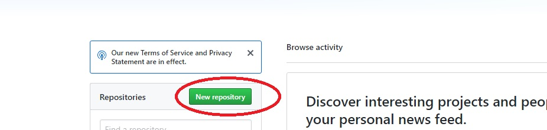
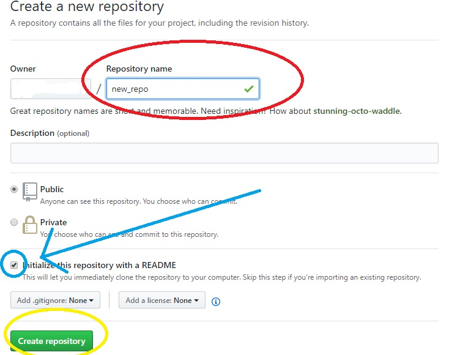
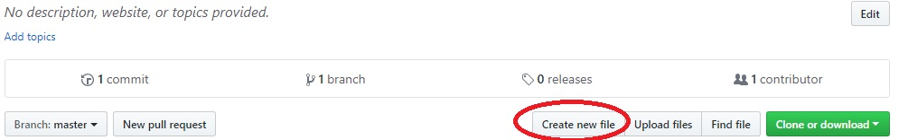
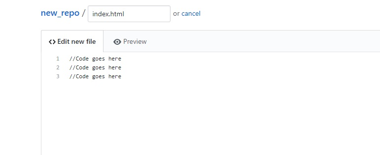
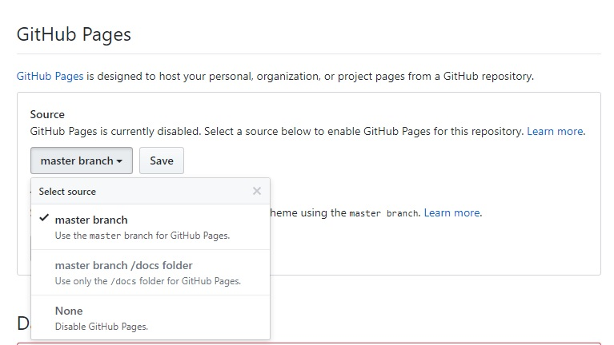
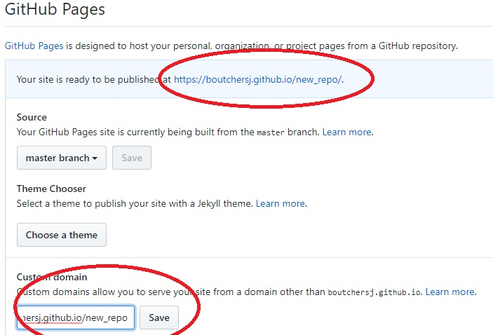
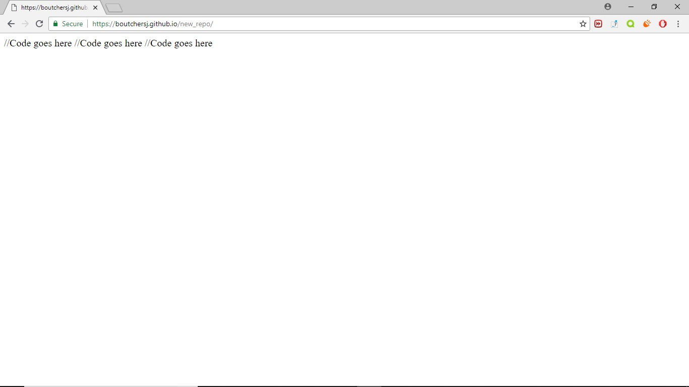

STEP 1: On the homepage of GitHub, click the 'New Repository' button
STEP 2: Name the repository. This is where your coding files will go for your projects. Then check the box for initializing with a ReadMe and click 'Create Respository'
STEP 3: This will bring you to the page for the repository you created. Click the 'Create new file' button.
STEP 4: Name your coding file with whatever extension you need for the type of code in the file (e.g. HTML files have '.html', CSS have '.css', Javascript '.js', etc.). Put your code into the large textbox as shown here. When you're done, click 'Create new file'
STEP 5: This will bring you back to the repository main page. You should see your new coding file saved below the 'ReadMe'. Click 'Settings' up in the tabs

STEP 6: Scroll through 'Settings' to the section titled 'GitHub Pages'. For 'Source', choose 'master branch' and click 'Save'
STEP 7: This will name the URL path the same as the name of your repository. You'll see a message at the top of the screen that says your site is ready to be published at this URL. To hasten the process, type that URL into the 'Custom domain' input field and click 'Save'
STEP 8: You will now see a message if you scroll back down to 'GitHub Pages' that your site is now published!

STEP 9: Go to the URL your site is published at and you will see your project live.
